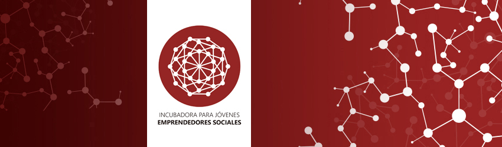

Incubadora para Jóvenes Emprendedores Sociales
La Incubadora para Jóvenes Emprendedores Sociales, surge como una alternativa de desarrollo para las iniciativas de jóvenes estudiantes universitarios que tienen ideas emprendedoras de carácter social o no lucrativas, pero que dada la falta de experiencia, el desconocimiento de herramientas, y/o habilidades no han podido llevarlas a cabo. Es por este motivo que, a través del perfeccionamiento de las habilidades y el fortalecimiento de los conocimientos, se espera generar en los jóvenes participantes la capacidad para convertirse en reales actores de la innovación y del desarrollo, con una mirada sistémica y ética.
Este proyecto nace a pulso el 8 de Noviembre de 2012 con elSeminario de Emprendimiento Social “SE SOCIAL” en Santiago. Para el año 2013 ya se realizaba la primera versión de talleres de emprendimiento en la Universidad de Santiago y durante el 2014 el equipo de IJES organizó elCampamento de verano de Emprendimiento Social 2014 en conjunto con CIESCOOP, AIESEC, la Universidad de Santiago de Chile y el Ministerio de Educación. Posteriormente, en el año 2017 IJES renace en FUDESO con una nueva versión de sus talleres para jóvenes emprendedores sociales.
Los alumnos y alumnas de la Incubadora para Emprendedores Sociales, deben ser personas con una capacidad para llevar a cabo proyectos con un alto impacto social. Además, contará con la formación necesaria en ámbitos sociales y técnicos, con la finalidad de llevar a cabo estrategias holísticas para la creación, desarrollo e implantación de las diversas iniciativas sociales.
Metodología de IJES: Ser, Saber y Hacer.